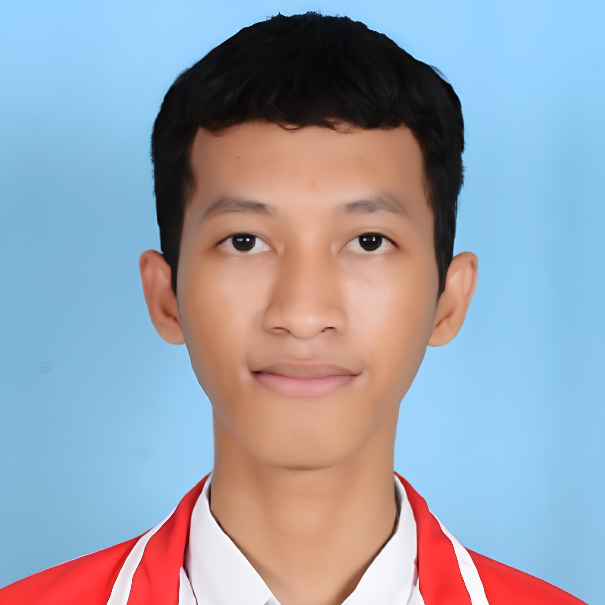

Portal Berita Asrama
Platform publikasi informasi dan berita terkini terintegrasi untuk penghuni asrama institusional.
news.myasrama.my.id
Web App

Mahasiswa Teknik Informatika Universitas Trunojoyo Madura (UTM) & Full-Stack Web Developer. Berfokus pada pembangunan sistem web terstruktur, otomatisasi, dan edukasi logika pemrograman.
Platform publikasi informasi dan berita terkini terintegrasi untuk penghuni asrama institusional.
Sistem pelaporan kebersihan dan kesehatan lingkungan asrama berbasis foto dan jadwal terstruktur.
Sistem pemindaian QR Code presensi waktu-nyata (real-time) dengan rekapitulasi data terpusat.
Koleksi kurasi prompt Kecerdasan Buatan (AI) terstruktur untuk efisiensi riset dan pengerjaan tugas akademik.
Aplikasi jadwal kegiatan mingguan yang interaktif dan responsif untuk manajemen agenda harian.
Platform tanya-jawab interaktif pembelajaran Bahasa Inggris berbasis komunitas (Proyek Mata Kuliah PAW).
Eksperimen kanvas interaktif unik yang mengonversi interaksi scroll pengguna menjadi berkas PDF.
Direktori profil dan biodata ringkas terstruktur untuk mahasiswa Teknik Informatika UTM angkatan 2024.
Pengembang Sistem Asrama & Portal Informasi
Merancang, mengembangkan, dan memelihara berbagai infrastruktur web seperti sistem presensi QR, portal berita asrama, hingga sistem pelaporan lingkungan KESHA.
Pendamping Pemrograman & Logika Komputer
Membimbing mahasiswa/siswa dalam memahami konsep fundamental alur logika, pemecahan masalah (problem solving), dan implementasi pemograman web nyata.
"Ilmu terbaik bukan yang sekadar dihafal, tapi yang kebermanfaatannya dirasakan sesama."
Fokus utama saya adalah menjembatani logika pemrograman inti dengan penerapannya di dunia nyata. Selain mengembangkan platform web produktif dan eksplorasi grafika komputer (OpenGL/C++), saya aktif membagikan ilmu untuk membantu sesama pembelajar memahami cara kerja sistem secara mendalam.